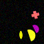
(1)
At least five squares are a blue square.
Exactly zero shapes are a magenta triangle.
At most zero shapes are a gray triangle.
A few squares are a blue square.
At least one shape is blue.
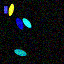
(2)
Not five shapes are cyan.
At least one shape is a triangle.
Less than five cyan shapes are a cyan triangle.
Almost no cyan shape is a cross.
More than one cyan shape is a cross.
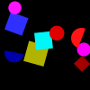
(3)
More than three blue shapes are a blue square.
Exactly one circle is a magenta circle.
Less than five squares are a yellow square.
Exactly one shape is yellow.
More than zero semicircles are cyan.
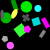
(4)
At least all shapes but one are a green square.
More than zero circles are a magenta circle.
At most five green shapes are a rectangle.
No cyan shape is a cyan square.
Exactly zero circles are yellow.
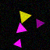
(5)
Exactly two gray shapes are an ellipse.
Exactly three shapes are a magenta square.
Not three triangles are yellow.
At most all magenta shapes but one are a magenta cross.
Not one magenta shape is a magenta ellipse.
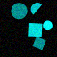
(6)
Exactly five ellipses are yellow.
Less than three shapes are a red triangle.
Not five shapes are magenta.
Exactly zero shapes are magenta.
Not zero ellipses are a red ellipse.
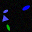
(7)
Not two triangles are a magenta triangle.
A few shapes are a magenta pentagon.
Not all pentagons but one are gray.
Two thirds of the magenta shapes are a pentagon.
At most zero pentagons are gray.
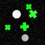
(8)
Not five semicircles are a green semicircle.
Less than three cyan shapes are a semicircle.
More than all shapes but one are a green semicircle.
Less than two semicircles are green.
More than one red shape is an ellipse.
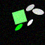
(9)
A quarter of the cyan shapes is a square.
Most cyan shapes are a cyan cross.
Exactly zero shapes are a magenta ellipse.
Less than all crosses but one are a magenta cross.
Exactly four circles are blue.
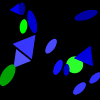
(10)
Almost all circles are blue.
More than one triangle is green.
At least all blue shapes but one are a blue ellipse.
More than two blue shapes are a semicircle.
Not one ellipse is a blue ellipse.
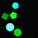
(11)
At least five red shapes are a red triangle.
Not five shapes are red.
Less than four shapes are a magenta cross.
More than all shapes but one are a red cross.
A few triangles are a red triangle.
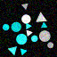
(12)
No square is a red square.
Exactly zero red shapes are an ellipse.
Exactly five shapes are a green pentagon.
Exactly zero cyan shapes are a cyan circle.
At least two shapes are a gray square.
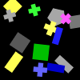
(13)
At least all shapes but one are a square.
Not one rectangle is gray.
Less than five squares are gray.
Exactly zero squares are a green square.
At most all green shapes but one are a square.
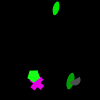
(14)
Less than one gray shape is an ellipse.
Not one green shape is a green ellipse.
Exactly two ellipses are magenta.
Most crosses are green.
Less than all magenta shapes but one are a semicircle.

(15)
At most four gray shapes are a gray ellipse.
At least one yellow shape is a yellow circle.
Almost all yellow shapes are a pentagon.
Less than five shapes are a blue ellipse.
Exactly two red shapes are an ellipse.
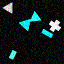
(16)
Exactly all green shapes but one are a green ellipse.
Less than two green shapes are a green ellipse.
All semicircles are gray.
A third of the semicircles is yellow.
More than one shape is a yellow semicircle.
(17)
Exactly five shapes are a triangle.
Exactly one shape is a magenta semicircle.
At most zero semicircles are a blue semicircle.
At most all shapes but one are green.
Not two shapes are a green cross.
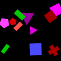
(18)
At most zero green shapes are a square.
At least all shapes but one are a green cross.
Exactly two shapes are a triangle.
Less than two shapes are a cyan triangle.
Less than five squares are red.
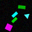
(19)
At most two circles are cyan.
At least all triangles but one are yellow.
Exactly all circles but one are a yellow circle.
Not three yellow shapes are a yellow pentagon.
Less than all shapes but one are a circle.
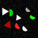
(20)
More than two red shapes are a red rectangle.
Not five red shapes are a circle.
At least three shapes are gray.
At least two red shapes are a circle.
Most rectangles are red.
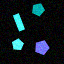
(21)
More than four triangles are a cyan triangle.
At most one cyan shape is a cyan circle.
More than five pentagons are green.
At least three green shapes are a triangle.
Exactly one circle is a cyan circle.
(22)
At least all shapes but one are a yellow triangle.
Not three triangles are a yellow triangle.
No shape is a gray circle.
At most one shape is a yellow triangle.
At most one red shape is a triangle.
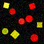
(23)
Less than three blue shapes are a semicircle.
Almost no semicircle is blue.
At least all crosses but one are green.
More than two green shapes are a cross.
At least zero crosses are a green cross.
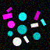
(24)
Exactly four shapes are a blue pentagon.
At most one blue shape is a pentagon.
Exactly five pentagons are a blue pentagon.
Not all pentagons but one are gray.
Exactly zero blue shapes are a blue cross.

(25)
At least two yellow shapes are a triangle.
Less than three gray shapes are a rectangle.
Not one rectangle is cyan.
Exactly one rectangle is a gray rectangle.
More than four cyan shapes are a rectangle.
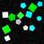
(26)
Three quarters of the circles are cyan.
Most green shapes are a circle.
Exactly four blue shapes are an ellipse.
All shapes are cyan.
Exactly zero circles are a cyan circle.

(27)
Less than three shapes are a red circle.
Not five shapes are a circle.
Less than two circles are gray.
At most one shape is a green square.
More than two shapes are gray.
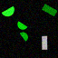
(28)
Exactly zero triangles are red.
At most three red shapes are a red triangle.
No shape is a yellow triangle.
More than two triangles are gray.
At most two shapes are a yellow triangle.
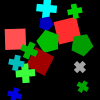
(29)
More than one cross is a green cross.
At most three blue shapes are a cross.
At least four green shapes are a green cross.
At least five shapes are green.
More than three green shapes are a green pentagon.
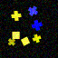
(30)
Exactly zero ellipses are gray.
At least zero magenta shapes are a cross.
Most crosses are a magenta cross.
Exactly zero magenta shapes are a triangle.
No triangle is magenta.
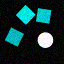
(31)
Less than four red shapes are a semicircle.
At most one square is a red square.
At most two red shapes are a red semicircle.
Not all shapes but one are a cyan circle.
Exactly four yellow shapes are a yellow cross.
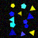
(32)
Exactly one triangle is green.
More than three shapes are an ellipse.
More than three ellipses are a magenta ellipse.
Exactly all red shapes but one are an ellipse.
At least zero yellow shapes are a yellow pentagon.
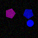
(33)
A quarter of the crosses is magenta.
Not zero magenta shapes are a magenta semicircle.
No shape is a triangle.
Not four shapes are a magenta pentagon.
More than three shapes are magenta.
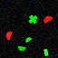
(34)
Exactly zero rectangles are yellow.
Exactly zero shapes are a yellow ellipse.
More than zero triangles are a red triangle.
At least all yellow shapes but one are a yellow ellipse.
At most one ellipse is a magenta ellipse.
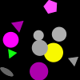
(35)
A quarter of the gray shapes is a gray ellipse.
Not four rectangles are a gray rectangle.
Less than one gray shape is a gray rectangle.
At least one blue shape is an ellipse.
Most ellipses are a gray ellipse.
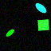
(36)
Most magenta shapes are a pentagon.
At most four shapes are a magenta pentagon.
At least four shapes are a magenta pentagon.
More than zero red shapes are a semicircle.
Not five pentagons are cyan.
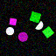
(37)
Less than one blue shape is a triangle.
Not all shapes but one are a triangle.
More than zero shapes are red.
Exactly one triangle is cyan.
At least two cyan shapes are a pentagon.
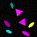
(38)
Half the yellow shapes are a yellow semicircle.
Not three shapes are a semicircle.
At least two cyan shapes are a triangle.
Less than two semicircles are a cyan semicircle.
At most three cyan shapes are a cyan triangle.
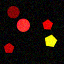
(39)
Exactly four magenta shapes are an ellipse.
At most zero shapes are a magenta ellipse.
Exactly all yellow shapes but one are a yellow ellipse.
More than one ellipse is a cyan ellipse.
Exactly four yellow shapes are a triangle.
(40)
At most one shape is yellow.
Less than two shapes are a circle.
At most one rectangle is cyan.
At most four rectangles are a cyan rectangle.
More than two cyan shapes are a circle.
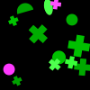
(41)
Not four ellipses are red.
More than three gray shapes are a triangle.
No gray shape is a triangle.
More than three cyan shapes are an ellipse.
Less than five gray shapes are a gray ellipse.
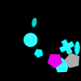
(42)
Almost all shapes are cyan.
Exactly two shapes are a cyan pentagon.
Less than three shapes are a cross.
Exactly two shapes are a cyan pentagon.
Not four ellipses are cyan.
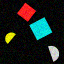
(43)
At least one green shape is a green cross.
At most zero shapes are a red square.
Exactly five ellipses are magenta.
Exactly all shapes but one are a magenta pentagon.
Almost no gray shape is a square.
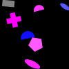
(44)
Not zero semicircles are blue.
At least five magenta shapes are a magenta semicircle.
Exactly five magenta shapes are a semicircle.
More than zero magenta shapes are a rectangle.
More than zero shapes are a red ellipse.
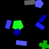
(45)
All green shapes are a green cross.
Not all shapes but one are a cross.
A few green shapes are a rectangle.
At least five crosses are green.
Almost all shapes are a cross.
(46)
At most two shapes are a cross.
No green shape is a circle.
Exactly all blue shapes but one are an ellipse.
At least one gray shape is an ellipse.
At least five crosses are yellow.
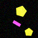
(47)
More than four green shapes are a cross.
Less than three shapes are yellow.
Not two shapes are yellow.
Less than one cross is cyan.
Less than two crosses are green.
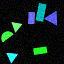
(48)
Exactly all semicircles but one are a yellow semicircle.
Not two shapes are an ellipse.
Most semicircles are yellow.
Not one shape is green.
A few semicircles are cyan.
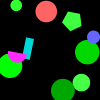
(49)
Exactly five rectangles are green.
Not zero circles are yellow.
At least two circles are a green circle.
At least all shapes but one are a magenta semicircle.
More than two green shapes are a triangle.
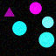
(50)
Not four shapes are an ellipse.
Not zero green shapes are a cross.
Less than five green shapes are an ellipse.
Exactly three green shapes are an ellipse.
At least two green shapes are a green ellipse.
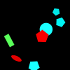
(51)
Exactly one cyan shape is a semicircle.
Not four red shapes are a pentagon.
More than two ellipses are red.
At least three shapes are a cyan rectangle.
At most all shapes but one are red.
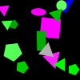
(52)
Not four circles are green.
At most two shapes are a gray triangle.
Not five shapes are a pentagon.
At most five shapes are a blue rectangle.
Exactly four triangles are magenta.
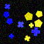
(53)
A third of the shapes is a triangle.
Less than all triangles but one are red.
Almost no triangle is green.
More than zero triangles are a gray triangle.
Less than three triangles are gray.
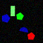
(54)
Exactly one shape is a green triangle.
At least one rectangle is blue.
At least two blue shapes are an ellipse.
More than one shape is an ellipse.
More than two rectangles are red.
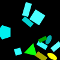
(55)
Exactly zero rectangles are cyan.
Almost all cyan shapes are a square.
At least all ellipses but one are green.
At least one yellow shape is a semicircle.
Less than four ellipses are yellow.
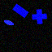
(56)
Not five ellipses are red.
Almost no ellipse is a red ellipse.
Less than zero ellipses are a red ellipse.
More than zero ellipses are a yellow ellipse.
Exactly three ellipses are yellow.
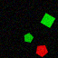
(57)
Less than five shapes are a red circle.
Not three cyan shapes are a cyan circle.
At most four shapes are a blue circle.
More than zero blue shapes are a triangle.
More than two cyan shapes are a cyan circle.
(58)
At least two green shapes are a rectangle.
Less than four shapes are a red cross.
All green shapes are a circle.
At most zero rectangles are a magenta rectangle.
At most five shapes are green.
(59)
Exactly three shapes are red.
All cyan shapes are a rectangle.
Less than one shape is a red rectangle.
Exactly four shapes are a red rectangle.
Almost all red shapes are a rectangle.
(60)
Two thirds of the gray shapes are a gray rectangle.
More than four rectangles are a gray rectangle.
Not four shapes are a gray rectangle.
A third of the rectangles is a gray rectangle.
A quarter of the rectangles is blue.
(61)
Exactly three squares are blue.
All squares are a blue square.
Not zero triangles are blue.
Exactly three shapes are a blue ellipse.
More than one yellow shape is an ellipse.
(62)
Exactly five shapes are blue.
At most one semicircle is a cyan semicircle.
At least two cyan shapes are a cyan circle.
At least one shape is a cyan circle.
At most all blue shapes but one are a blue circle.
(63)
At most zero triangles are a cyan triangle.
More than three rectangles are a gray rectangle.
Most triangles are cyan.
At least five shapes are a magenta cross.
Exactly two shapes are a green semicircle.
(64)
Less than five shapes are yellow.
Exactly zero shapes are yellow.
All triangles are a red triangle.
More than five shapes are red.
At least four shapes are a square.
(65)
At most three shapes are a cyan semicircle.
More than all blue shapes but one are a rectangle.
No shape is a green square.
At most zero cyan shapes are a cyan rectangle.
At most zero shapes are a cross.
(66)
At least one shape is a red rectangle.
At least two red shapes are a rectangle.
Most rectangles are a red rectangle.
Exactly four red shapes are a red rectangle.
Almost no rectangle is a red rectangle.
(67)
Two thirds of the squares are red.
Less than one shape is a semicircle.
Not all squares but one are red.
Not zero red shapes are a red square.
At most three squares are magenta.
(68)
All green shapes are an ellipse.
Not four shapes are an ellipse.
Not one pentagon is green.
Less than three magenta shapes are a pentagon.
At least four triangles are green.
(69)
At most all crosses but one are cyan.
At most four cyan shapes are a cyan cross.
More than three crosses are a cyan cross.
Exactly zero circles are red.
Exactly zero crosses are yellow.

(70)
A few shapes are a pentagon.
More than one green shape is a semicircle.
Exactly two ellipses are cyan.
Exactly all cyan shapes but one are a semicircle.
At most zero shapes are a cyan pentagon.
(71)
A few magenta shapes are a magenta circle.
Exactly five shapes are a circle.
Less than four blue shapes are a pentagon.
Exactly one triangle is blue.
Not four circles are magenta.
(72)
At most one blue shape is a blue semicircle.
Most blue shapes are a blue circle.
No shape is a semicircle.
Not three ellipses are blue.
At most five blue shapes are a blue semicircle.
(73)
No ellipse is a blue ellipse.
More than three yellow shapes are an ellipse.
More than all shapes but one are a yellow ellipse.
More than four ellipses are a yellow ellipse.
At most three ellipses are blue.
(74)
More than three rectangles are magenta.
Exactly one cyan shape is a triangle.
Not all pentagons but one are green.
Not two red shapes are a triangle.
Less than two shapes are green.
(75)
More than one shape is blue.
Less than three green shapes are a green square.
At least two shapes are a blue square.
More than zero green shapes are an ellipse.
At most two squares are a green square.
(76)
More than three semicircles are a magenta semicircle.
Less than four shapes are a magenta semicircle.
Almost all magenta shapes are a semicircle.
Exactly one semicircle is cyan.
A third of the semicircles is a cyan semicircle.
(77)
At least zero ellipses are a yellow ellipse.
More than three pentagons are yellow.
Not one yellow shape is an ellipse.
At most four shapes are an ellipse.
At least two yellow shapes are an ellipse.
(78)
Less than two semicircles are a cyan semicircle.
No shape is yellow.
At most two shapes are a semicircle.
At most three red shapes are a semicircle.
At least three semicircles are a red semicircle.
(79)
At most one yellow shape is a yellow circle.
Exactly five squares are red.
Not five shapes are cyan.
Not zero shapes are a cyan pentagon.
Not three yellow shapes are a cross.
(80)
Exactly three circles are magenta.
More than three rectangles are cyan.
More than three cyan shapes are a circle.
Not one cyan shape is a square.
More than four rectangles are green.
(81)
Almost no yellow shape is an ellipse.
At least two shapes are green.
Not five pentagons are a yellow pentagon.
At least zero shapes are gray.
Exactly all circles but one are a yellow circle.
(82)
Less than two rectangles are a gray rectangle.
Less than zero blue shapes are a blue triangle.
Almost no shape is a blue triangle.
More than four shapes are a triangle.
Not two shapes are a yellow triangle.
(83)
Less than four green shapes are a green circle.
At most one green shape is a green circle.
Exactly five green shapes are a green circle.
Not three crosses are a blue cross.
A few green shapes are a cross.
(84)
Not three semicircles are green.
More than zero yellow shapes are a semicircle.
More than zero shapes are blue.
More than three shapes are a semicircle.
Not zero shapes are a blue triangle.
(85)
Not zero cyan shapes are a cyan square.
Exactly four green shapes are a pentagon.
Exactly two pentagons are a blue pentagon.
All pentagons are a cyan pentagon.
Exactly four pentagons are a blue pentagon.
(86)
More than three semicircles are red.
More than three semicircles are a red semicircle.
At most zero red shapes are a pentagon.
Not one shape is a red semicircle.
Exactly all semicircles but one are red.
(87)
Less than all semicircles but one are a cyan semicircle.
More than zero yellow shapes are a cross.
Exactly three blue shapes are a semicircle.
Not two semicircles are a blue semicircle.
More than three shapes are a cyan cross.
(88)
Exactly five yellow shapes are a yellow ellipse.
Less than zero yellow shapes are a yellow semicircle.
A third of the green shapes is an ellipse.
Not zero yellow shapes are a circle.
All cyan shapes are an ellipse.
(89)
At most two triangles are magenta.
At least four triangles are a magenta triangle.
More than four magenta shapes are a semicircle.
More than four triangles are magenta.
At most zero magenta shapes are a magenta triangle.
(90)
More than three crosses are a blue cross.
Less than all crosses but one are a blue cross.
Less than four pentagons are gray.
Exactly three gray shapes are a gray cross.
Not all squares but one are red.
(91)
Most shapes are cyan.
More than three triangles are yellow.
More than three cyan shapes are a triangle.
Less than five shapes are a yellow triangle.
At most three semicircles are cyan.
(92)
Not four circles are blue.
At least zero shapes are blue.
At most one blue shape is a blue circle.
Not all shapes but one are a red square.
Not one blue shape is a blue circle.
(93)
More than three shapes are a rectangle.
Exactly four triangles are magenta.
Not one shape is a gray triangle.
Not five shapes are magenta.
More than three triangles are magenta.
(94)
Almost all red shapes are a red rectangle.
Exactly all circles but one are cyan.
Less than zero circles are a red circle.
Not four shapes are a red circle.
Exactly zero circles are yellow.
(95)
Exactly all circles but one are yellow.
At most one shape is a blue semicircle.
All blue shapes are a blue semicircle.
Not two shapes are a yellow pentagon.
At least four semicircles are red.
(96)
At least five yellow shapes are a yellow circle.
More than one cross is a yellow cross.
More than two yellow shapes are a yellow triangle.
Not one shape is a blue semicircle.
Most triangles are cyan.
(97)
Exactly five shapes are a yellow pentagon.
More than three shapes are yellow.
Exactly one yellow shape is a circle.
No shape is a square.
More than four shapes are a cyan circle.
(98)
More than zero blue shapes are a circle.
Not five circles are cyan.
Almost all triangles are cyan.
Less than all shapes but one are blue.
At most two circles are cyan.
(99)
Half the blue shapes are a blue circle.
Exactly one shape is a blue cross.
Half the crosses are a cyan cross.
At least four crosses are a cyan cross.
At most one blue shape is a cross.
(100)
Exactly four cyan shapes are an ellipse.
More than four shapes are a cyan square.
Less than four shapes are a blue square.
Exactly two ellipses are blue.
More than five squares are a cyan square.